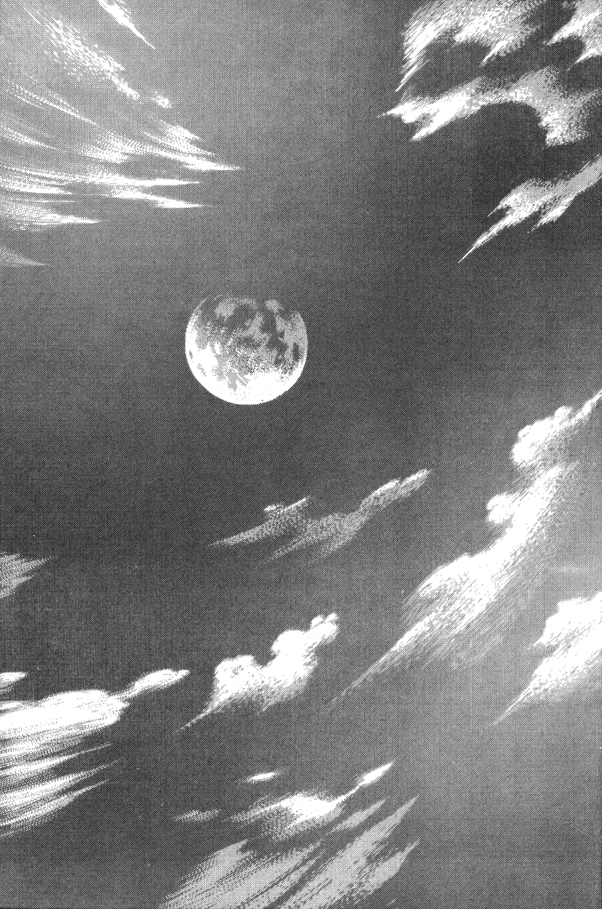
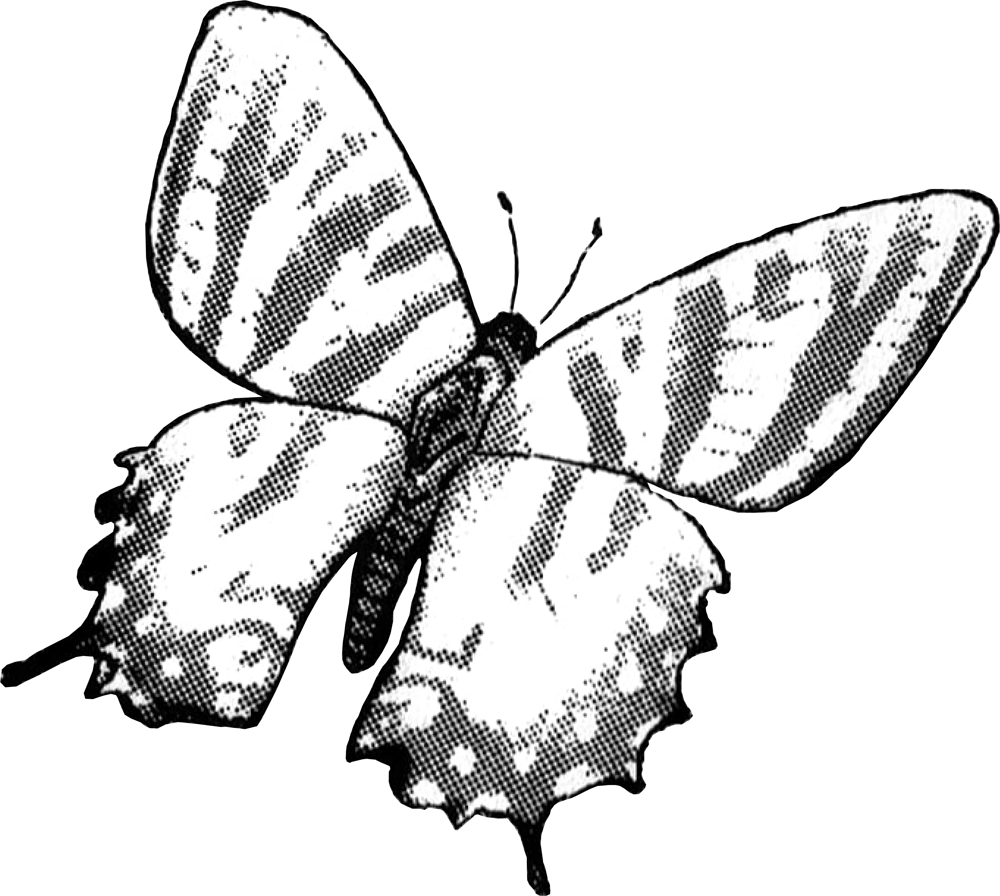
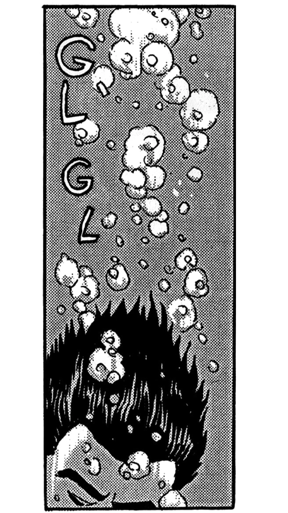
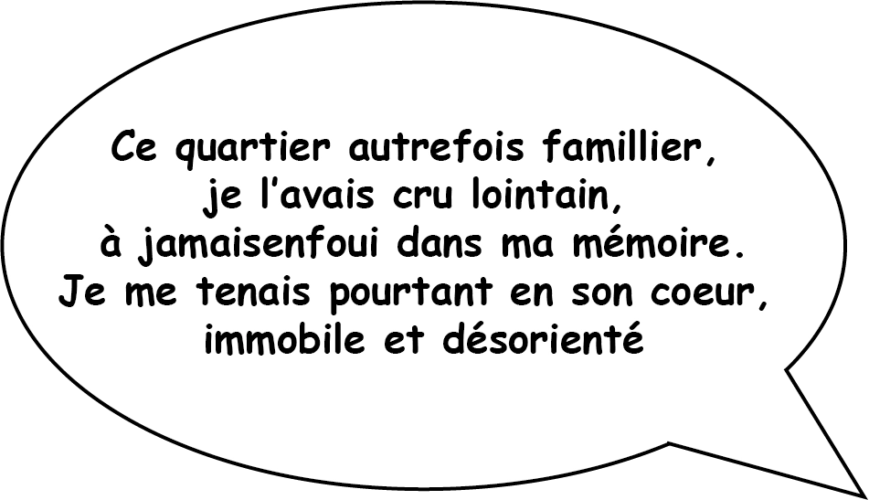
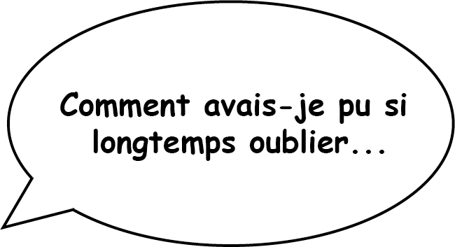
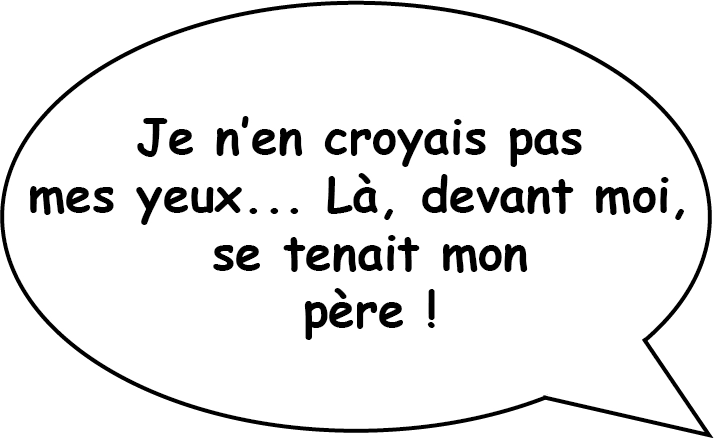
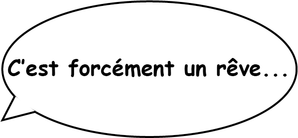
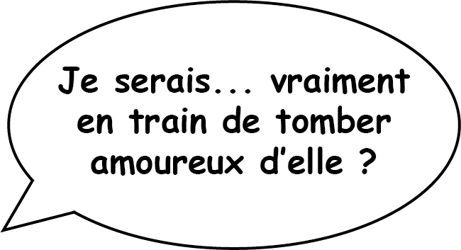
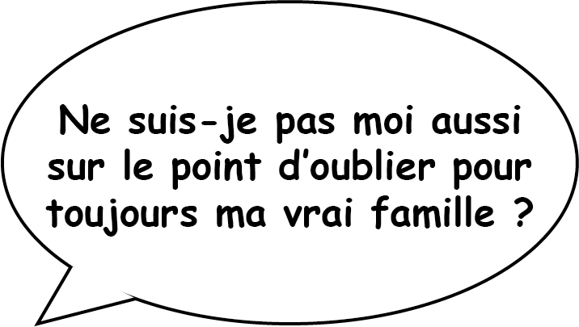
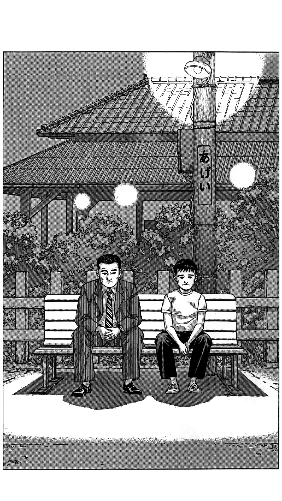

quartier lointain
Jirô Taniguchi
Hiroshi est un père de famille japonaise qui revit son enfance en
interrogeant ses proches. La disparition incompréhensible de son
père alors qu'il avait quatorze ans l'empêche de continuer sa
propre vie de façon sereine.